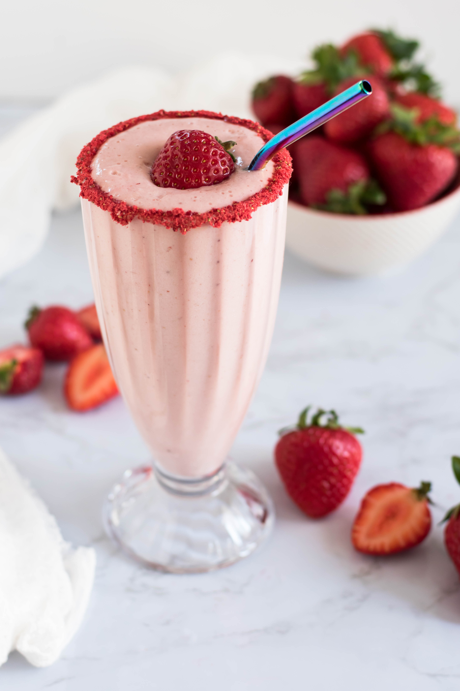

| Nutrition Goals | Rationale |
|---|---|
| Eat every 3-4 hours during the day starting with breakfast | *Provides optimum energy for training. *Increases available energy for workouts. |
| Balance your plate with ¼ protien, ¼ grain, ¼ fruit, and ¼ veggies plus a calcium source | *Helps to ensure a good balance of nutrients. *An easy way to get enough protein and carbohydrates. |
| Start each day hydrated. Carry a water bottle with you all day. | *Being well-hydrated transfers directly to improved performance.
*If you're hydrated, your chances of sustaining an injury are decreased. *You'll use nutrients in food much more efficiently if you're hydrated. |
| Eat enough carbohydrates. For a highly-trained ahtlete, that's 50-70% of your total food intake. | *Carbohydrates are your body's main source of energy (for your working
muscles and your brain).
*Athletes on low carbohydrate diets don't have the available energy to perform at their best. |
| Don't skimp on protein. Get a good protein source at every meal | *Breakfast: scrambled eggs, yogurt, milk, Canadian bacon, soy sausages
*Lunch and dinner: chicken or turkey breast, lean hamburgers, roast beef, fish, soy, milk, yogurt, cheese, nuts and nut butters *Snacks: energy bars, nuts and seeds, peanut butter, cheese sticks, yogurt, milk |
| Optimize your fat intake. Fat is an essential part of your training nutrition program. Eating under 20% fat can hamper performance and impair immunity. | *Fat is an excellent energy source for performance. It should be in balance
with other nutrients. *Sources: olive oil, olives, nuts and nut butters, canola oil, margarine, butter, and lowfat foods like yogurt and cheese |
| Eat foods high in key nutrients calcium and iron. | *Calcium: milk, cheese, yogurt, calcium-fortified OJ, calcium-fortified soymilk
*Iron: lean red meat, iron-fortified cereal, nuts and seeds, spinach |
A Plan for Gaining Muscle
To build muscle, you need to combine a sound workout program with at least 3,000 to 4,000 extra calories per week. That's a minimum of 500 extra calories per day on top of what you're already eating at meals and snacks. Many athletes even need 1,000 to 2,000 or more extra calories per day to see results! If you have a naturally high metabolism, it may take even longer to turn food into muscle when balanced with a sound workout plan. But being consistent and planning ahead so you train nutrionally as well as physically is the key. Here are some tips to get you going:
- Maximize "eating opportunities"
Many athletes don't put enough fuel in their bodies because they haven't thought ahead through the day's schedule. By taking easy-to-pack snacks like sports bars, fruits, juices, trail mix, cheese and crackers, and granola bars along during the day, it doesn't matter where you are or what your schedule is--you'll always be able to eat when you get a free minute. Don't be caught hungry and without fuel.
- Make the most of high-calorie liquids
Drink a big glass of juice or milk when you get up in the morning. Carry single-serving cans or bottles of high calorie liquids like grape, cranberry, pineapple, or apple juice with you during the day. This way you can grab a drink when you have a break during the day. Order milkshakes, milk, juices, or drinks like lemonade or punch with meals. Blend up a homemade milkshake with ice cream, milk, and frozen fruit before going to bed to boost calories by at least 500 per day.
- Make time for Breakfast
- Don't fall back on weekends
Just by grabbing a peanut butter sandwich and a banana when you head out the door in the morning, you can add over 400 calories to your daily intake. In one month, that could potentially equal three pounds of weight gain! Since time is often a big issue with athletes on the run, remember that breakfast doesn't need to be eaten sitting down. To get one step ahead, pack a sandwich, a bagel with cream cheese, or a cereal bar with a piece of fresh fruit before yo
Sleeping in on the weekends can be a great reward for a long week. But when you're trying to gain muscle mass, you can sleep right through chances to bulk up with solid nutrition. I've worked with athletes who follow a great plan all week only to start right back where they were on Monday because of missed meals on the weekend. Make a nutrition plan for Saturday and Sunday in addition to weekdays.
Fast snacks and meals
Time: 30 seconds: high-energy ideas you can open and eat:
Liquid drinks/meals:
- Boost or Slimfast (in a can)
- Spirutein shake (in a container)
- Carnation Instant Breakfast (in a can)
- 6-ounce orange, orange-pineapple, or grapefruit juice cans
- 12-ounce cranberry, cran-grape, and cran-apple juices
Examples of energy bars to have available on the run:
- CLIF bars
- LUNA bars
- EAS EDGE bars
- Balance bars
- Genisoy bars
- Spirutein bars
- Gatorade bars
Quick Snacks:
- Mix 1 box Quaker Oat Bran, Shredded frosted mini-wheats, or Shredded Wheat and Bran with 1 pound dried fruit (raisins, dried apples, dried apricots, or dried cranberries work well) and 1 pound of almonds or nuts. Divide into ziplock bags and carry with you to work. Stores well.
- Pre-packaged cheese/cracker or peanut butter/cracker packs
- Single-serving yogurt
- Single-serving cheese sticks
- Fresh fruit
- Any dried fruit
- Nuts, seeds, and soy nuts
- Baby carrots
- Beef jerky
- Pop-top cans of tuna or salmon
- Whole grain crackers (i.e. Rye Krisps)
Time: 3-5 minutes: meals you heat or add water to and heat:
- Pop-top single servings of spaghetti, chicken and noodles, ravioloi, etc.
- Cans of soup with pop-tops: Healthy Choice, Campbell's Select, Progresso
- Nile Spice bean and pea soup cups: just add water
- Uncle Ben's Rice Bowls (frozen)
- Lean Cuisine Hearty Portions (frozen)
- Health Choice Frozen Meals and Bowls
- Ethnic Gourmet Rice Bowls (frozen)
- Smart Ones Meals and Bowls
- Amy's Frozen Meals
- Celentano Frozen Vegetarian Meals
- Lowfat Budget Gourment Frozen dinners: try Mandarin Chicken or Beef Stroganoff
- Michelina's Lowfat Meals: try Black Bean Chili, Lasagna, or Teriyake Chicken
- Stouffer's Lean Cuisine Meals: try Chicken Enchiladas, Baked Fish, or Glazed Chicken
- Chef's Choice Frozen Meals: try Shrimp Linguine, Beef Stir Fry
Time: 15-20 minutes: "You Put Together" Fast Meals:
- Ortega Frozen Skillet Solutions
- Green Giant Create a Meal
- El Paso Fajita Kit: add veggies and refried beans
- Chicken Helper: try Chicken Parmesan Pasta or Southwest Chicken
- Rice and bean mixes in packages
- Lipton Rice dishes
Additional grocery items:
Single-serving milk, juice, and bottled water
Pre-packaged salads, mixed fruit, and fresh veggies
Pre-packaged cole slaw or broccoli salad for stir-fries or salads
Pre-cut chicken tenderloin strips (freezer)
Pre-sliced deli turkey, ham, or roast beef for fast sandwiches
Granola bars, cereal bars, Carnation Instant Breakfast breast
Cereals, oatmeal packets, Cream of Wheat packets
High-Energy Shakes
*Blend these shakes in a belender or food processor. Serve and/or keep in the refrigerator for up to 48 hours.
To get fast, high-enery nutrition, try these shakes you can mix in a blender. Drink them between workouts, to aid muscle recover after workouts, when you're in a hurry, or as a snack anytime to help you get stronger. These shake recipes provide an average of 500 calories per recipe.
| Banana Energy Shake | 2 cups skim milk 2 packets vanilla Carnation Instant Breakfast® 1 banana 2 Tablespoon chocolate syrup |
|
| Strawberry Smoothie | 2 cups skim milk 1 packet Carnation Instant Breakfast® 1 cup frozen or fresh strawberries 1 Banana 4 crushed ice cubes |
|
| Chocolate Shake | 1 cup ice milk or frozen yogurt 1 packet Carnation Instant Breakfast® 1 cup skim milk 2 T. chocolate syrup 4 crushed ice cubes |
|
| Orange-Peach smoothie | 2 cups orange juice (or any juice) 2 cups ice milk or frozen yogurt 1 cup frozen peaches (or any fruit) |
|
| Peanut Butter Shake | 2 cups ice milk or frozen yogurt 2 packets vanilla Carnation Instant Breakfast® 2 cups skim milk 2 T. peanut butter |
|
| Smooth Chocolate Shake | 1 cup regular vanilla yogurt 1 cup 2% milk or whole milk ¼ c. dried skim milk powder 3 T. chocolate syrup |
 |
| Orange-Peach Smoothie | 1 cup orange juice 1 cup vanilla ice cream ½ cup frozen peaches |
|
| Strawberry Smoothie | 1 cup 2% or whole milk 1 packet strawberry Carnation Instant Breakfast® ½ cup frozen strawberries 1 cup lowfat vanilla yogurt 3 crushed ice cubes |
 |
| Banana Energy Shake | 1 cup 2% or whole milk 1 packet vanilla Carnation Instant Breakfast® 1 banana 1 Tablespoon peanut Butter |
High-Calorie Snacks
Struggling to put on muscle? Along with sound workouts, keep quick snacks available so you can pump up the calories every day. Try these energy-packed snacks with over 500 calories each. Start by adding one high-energy snack a day to your normal diet. To icrease your calories by 1,000 each day, add two snacks to your routine.
| 2 cups of a homemade chocolate milkshake |
| 3 cups of crangrape juice drink |
| 4 fig bars and 2 cups of apple juice |
| 1 piece of cheese pizza and 2 cups of grape juice |
| 2 toaster pastries (i.e. Pop Tarts®) and 1 cup of 2% or whole milk |
| 8 packaged cheese crackers with peanut butter and 2 cups of 2% or whole milk |
| 1 granola bar, ¼ cup raisins, and 2 cups of pineapple juice |
| 1 cup of fruit yogurt, 4 graham crackers, and 1 banana |
| 1 turkey sandwich and 1 cup of 2% or whole milk |
| 1 cup of granola cereal and 1 cup of 2% or whole milk |
| 2 cups of instant breakfast drink mix with 2 cups of 2% or whole milk |